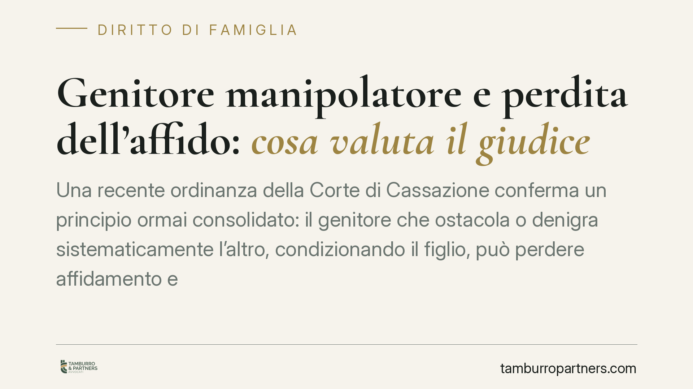

Genitore manipolatore e perdita dell'affido: cosa valuta il giudice
Una recente ordinanza della Corte di Cassazione conferma un principio ormai consolidato: il genitore che ostacola o denigra sistematicamente l'altro, condizionando il figlio, può perdere affidamento e collocamento. Non rileva l'etichetta clinica, ma la prova delle condotte concrete e il loro impatto sul minore. Analizziamo cosa cambia per chi vive un conflitto genitoriale.

Il caso e il principio
La Suprema Corte è tornata su un tema delicato: le condotte di un genitore che allontana il figlio dall'altro. Nel caso esaminato, il comportamento ostativo di uno dei genitori ha giustificato la modifica dell'affidamento e del collocamento del minore.
Il punto centrale è duplice. Primo: la condotta manipolatoria, quando provata, incide sull'idoneità genitoriale. Secondo: la volontà espressa da un minore che risulti condizionato non vincola il giudice, che deve guardare all'interesse effettivo del figlio e non alla sua adesione a uno schema indotto.
Inquadramento normativo
Il criterio guida resta l'interesse superiore del minore, cardine dell'intero diritto di famiglia. L'art. 337-ter del Codice civile fissa il principio di bigenitorialità: il figlio ha diritto a mantenere un rapporto equilibrato e continuativo con entrambi i genitori. Chi compromette questo diritto agisce contro l'interesse del minore, e il giudice può intervenire sull'affidamento.
Sul piano sovranazionale rilevano l'art. 8 della Convenzione europea dei diritti dell'uomo (tutela della vita familiare) e l'art. 12 della Convenzione di New York sui diritti del fanciullo del 1989, che riconosce al minore capace di discernimento il diritto di esprimere la propria opinione.
L'ascolto del minore trova fondamento negli artt. 336-bis c.c. e, dopo la riforma Cartabia (D.Lgs. 149/2022), negli artt. 473-bis.4 e seguenti del Codice di procedura civile, che regolano modalità e garanzie dell'audizione. L'art. 315-bis c.c. riconosce in generale il diritto del figlio a essere ascoltato nelle questioni che lo riguardano. Ma ascoltare non significa obbedire: il giudice valuta se l'opinione del minore sia genuina o il frutto di un condizionamento.
Oltre l'etichetta: contano i fatti
Un chiarimento importante. La giurisprudenza recente diffida delle etichette cliniche usate come scorciatoia probatoria. Non basta invocare una "alienazione" come diagnosi: occorre dimostrare condotte concrete — denigrazioni ripetute, ostacoli sistematici agli incontri, pressioni sul figlio — e il loro impatto reale.
Questo taglio protegge anche chi subisce un uso tattico dell'accusa. Nei contenziosi più aspri, l'etichetta di "genitore manipolatore" viene talvolta brandita come arma. Proprio per questo il giudice non si accontenta di affermazioni generiche: richiede prova, spesso con l'ausilio dei servizi sociali e di consulenze tecniche.
Implicazioni pratiche
Per il genitore collocatario, la lezione è netta: favorire il rapporto del figlio con l'altro genitore non è una concessione, è un dovere. Comportamenti ostativi reiterati possono condurre alla perdita del collocamento e, nei casi più gravi, dell'affidamento.
Per il genitore che si sente escluso, l'ordinanza conferma che esistono strumenti giuridici concreti. Ma il percorso richiede prove documentate e tempi non brevi: le decisioni che incidono sulla vita di un minore vengono adottate con prudenza e gradualità.
Cosa fare in concreto
- Documenta le condotte. Annota date, episodi di ostruzionismo, messaggi e comunicazioni rilevanti. La prova concreta vale più dell'etichetta.
- Rispetta i provvedimenti vigenti. Non reagire con contro-ostruzionismo: comportamenti speculari danneggiano la tua posizione.
- Coinvolgi i servizi sociali e i professionisti. Relazioni e consulenze tecniche sono spesso decisive per ricostruire la dinamica familiare.
- Tutela l'ascolto corretto del minore. Se chiedi l'audizione del figlio, assicurati che avvenga nelle forme di garanzia previste dal rito.
- Valuta tempestivamente le vie giudiziali. È opportuno un supporto legale qualificato già alle prime avvisaglie di un conflitto strutturato, per impostare correttamente la strategia probatoria.
---
Contributo informativo a cura di Tamburro & Partners. Non costituisce parere legale.
Ogni famiglia ha il suo equilibrio.
Separazione, divorzio, affidamento, assegno: se vuoi un confronto riservato su una specifica situazione, scrivi allo studio. Ti rispondiamo entro un giorno lavorativo.